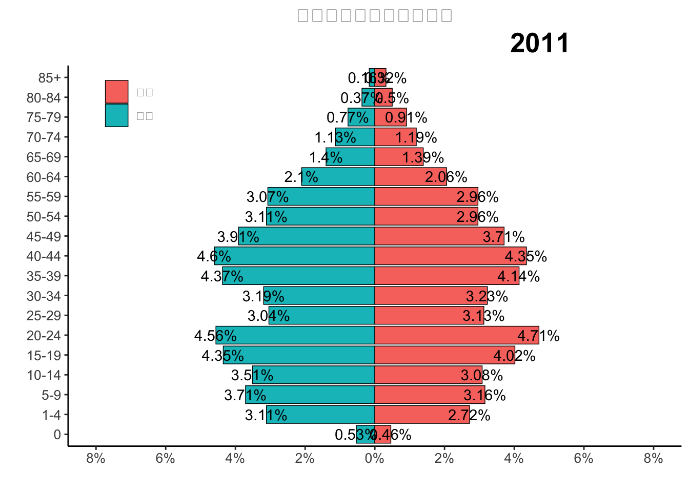

year sex r0 r1 r5 r10 r15 r20 r25 r30 r35 r40 r45
1 2009 男性 5992 22345 25843 26164 43929 54912 58033 47602 54539 50224 40894
2 2009 女性 5857 22146 24908 25507 48444 47977 52270 46133 48743 44852 39429
3 2010 男性 6583 39619 42627 39820 45037 54131 34227 34382 42964 47668 38828
4 2010 女性 5484 30619 32323 31418 40701 56864 36506 34890 42224 48566 40392
5 2011 男性 5798 33931 40512 38334 47433 49693 33125 34833 47700 50181 42654
6 2011 女性 4983 29613 34439 33614 43799 51384 34154 35228 45182 47480 40500
r50 r55 r60 r65 r70 r75 r80 r85
1 40855 29236 18125 13376 10564 6242 2369 577
2 39600 28104 18908 14984 11186 6425 3363 1408
3 28353 32932 24141 16239 11913 8333 4241 1970
4 28425 32685 23329 16139 12245 9821 5835 3879
5 33943 33498 22853 15307 12274 8428 4032 1694
6 32253 32249 22456 15207 12998 9966 5459 3507人口金字塔图可以形象的展示人口结构，而动态人口金字塔则可以直观的展示历年人口结构的变化情况，从而可以直观的对人口数据进行质量控制，本篇博文讲介绍如何利用R语言Rmd文档输出动态人口金字塔图。
首先，我们先看一下需要准备的人口数据结构,数据集包含某个地区男性和女性每年的不同年龄组的人口数（5岁一组），年份变量为year，性别变量为sex，人口数据分别为r0、r1、r5、r10、… 、r85等。
作图思路
首先把现有的数据从宽数据转换为长数据，然后对数据进行简单处理，最后利用for循环和ggplot2输出多个年份的人口金字塔图，然后利用code chunk 选项输出动态图片。
数据处理
library(dplyr)
library(tidyr)
data <- data %>%
## 把宽数据转换为长数据
gather("agegrp","rks",-year,-sex)%>%
## 整理年龄组变量，添加标签转换显示格式
mutate(agegrp=as.numeric(gsub("[^0-9]", "", agegrp)),
agegrp=factor(agegrp,labels = c("0","1-4","5-9","10-14","15-19","20-24","25-29","30-34","35-39","40-44","45-49","50-54","55-59","60-64","65-69","70-74","75-79","80-84","85+")))%>%
group_by(year)%>%
## 把男性人口数转换为负值，以是条图显示在左侧
mutate(rks=round(rks/sum(rks),4),
rks=ifelse(sex=="男性",-rks,rks))Rmd code chunk 选项
利用Rmd文档可以输出成很多种格式的输出结果，比如word、ppt、网页、pdf等，本篇博文介绍的为输出到网页显示动态图片。
在Rmd文档中插入r语言代码块，代码块的选项设置为fig.show=‘animate’,animation.hook=‘gifski’，当代码块内的语句生成多个图片的时候，会自动设置为动画播放。
利用for循环和ggplot2制作金字塔图
在代码块内部，使用for循环和ggplot2生成多个年份的人口金子塔图即可。
## 加载ggplot2包
library(ggplot2)
## 建立for循环
for (i in 2011:2017) {
data %>%
filter(year==i) %>%
ggplot(aes(x=factor(agegrp),y=rks,fill=sex)) +
geom_bar(stat = "identity",position = "identity",color="black",linewidth=0.25)+
geom_text(aes(label=paste0(abs(rks) * 100, '%')))+
coord_flip()+
theme_classic()+
xlab("")+
ylab("")+
scale_y_continuous(limits = c(-0.08,0.08),breaks=seq(-0.08,0.08,0.02),labels = function(x) paste0(abs(x) * 100, '%'))+
labs(title="历年人口金字塔变化情况",subtitle=paste(i))+
theme(legend.position = c(0.1,0.9),
legend.title = element_blank(),
strip.text = element_text(size=10, face="bold.italic"),
strip.background = element_rect(color="white", size=0),
axis.text=element_text(size=10),
axis.title=element_text(size=12, face="bold"),
plot.title = element_text(face="bold", size=14, hjust = 0.5),
plot.subtitle=element_text(face="bold",size=20,hjust=0.8))->p
plot(p)
}Warning: The `size` argument of `element_rect()` is deprecated as of ggplot2 3.4.0.
ℹ Please use the `linewidth` argument instead.